HV Control Board (Ultimate HV Board)
2026–27 Formula SAE EV · Validation in progress
HV control and safety board for precharge, solid-state discharge, accumulator isolation relay (AIR) control, HV-present detection, AIR weld detection, tractive-system measurement points (TSMPs), and vehicle safety-light logic. The board sits inside the accumulator in a section separated from the battery cells as part of a three-PCB electronics stack.
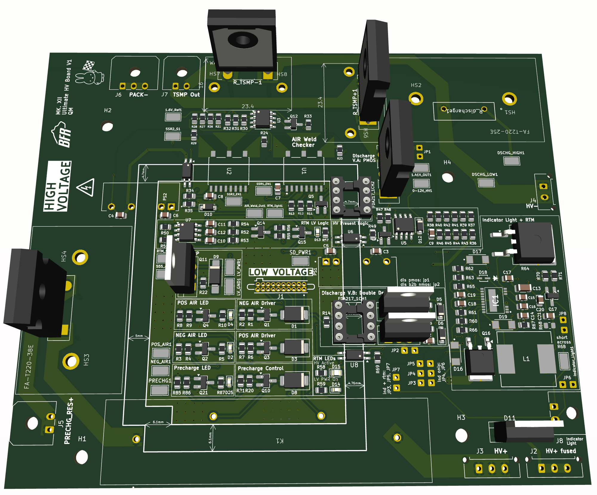
Overview
The HV Control Board consolidates the primary high-voltage control, monitoring, and safety circuitry for Bruin Formula Racing's 2026–27 Formula SAE EV accumulator. It interfaces the low-voltage BMS and shutdown system with a tractive system operating at up to 478.8 V.
The board controls the positive and negative accumulator isolation relays and precharge relay, provides active discharge of the vehicle-side DC link, detects HV presence and welded AIRs, and contains the tractive-system measurement-point circuitry. It also provides the logic and drivers for the vehicle's HV indicator and ready-to-move safety lights.
The board sits inside the accumulator as part of a three-PCB electronics stack with the BMS Parent and HV Isolated Backplane. Consolidating these functions inside the accumulator reduces external HV electronics and simplifies wiring between the accumulator, service section, and vehicle.
Main functions
- Precharge control
- Solid-state active discharge
- HV-present detection
- AIR weld detection
- AIR and precharge relay control
- Tractive-system measurement-point circuitry
- HV indicator-light control
- Ready-to-move (RTM) light control
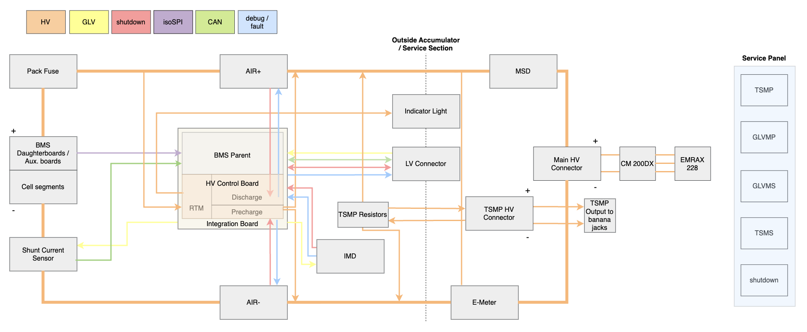
Design requirements
The board was designed around a 114s6p accumulator with a maximum tractive-system voltage of 478.8 V. Major constraints included meeting Formula SAE precharge and discharge timing requirements, maintaining separation between the high- and low-voltage domains, and packaging the control electronics within the accumulator.
The precharge system must charge the inverter DC link to at least 90% of accumulator voltage within 5 seconds, while the discharge system must bring the tractive system below 60 V within 5 seconds after shutdown.
- Maximum pack voltage: 478.8 V
- Precharge: ≥90% of accumulator voltage within 5 s
- Discharge: <60 V within 5 s
- Four-layer PCB with 5 mm HV/LV separation
- Packaged inside the accumulator in a three-PCB electronics stack
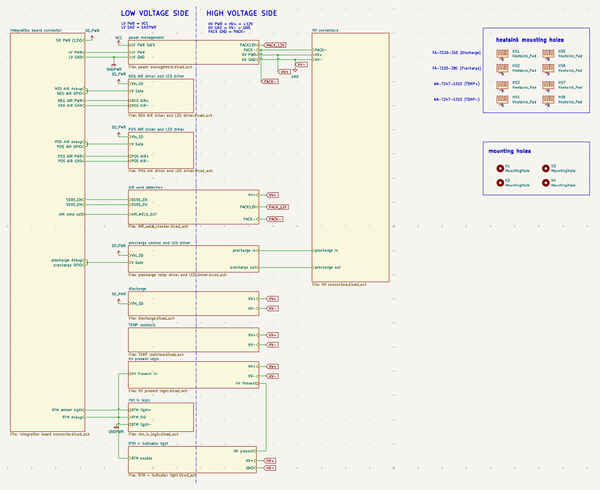
Precharge
The precharge circuit limits inrush current while charging the inverter's 650 µF DC-link capacitance before the main accumulator isolation relays fully connect the pack to the vehicle. A 2.2 kΩ resistor is placed in series with the precharge path and bypassed once precharge is complete.
The precharge relay is controlled by the BMS through an NMOS low-side driver. A gate resistor and pull-down provide defined switching behavior, while a TVS diode across the relay coil suppresses the inductive transient generated when the relay is switched off. A separate LED driver provides a visual indication of the commanded precharge state during debugging.
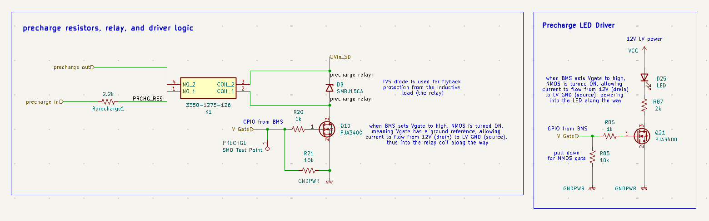
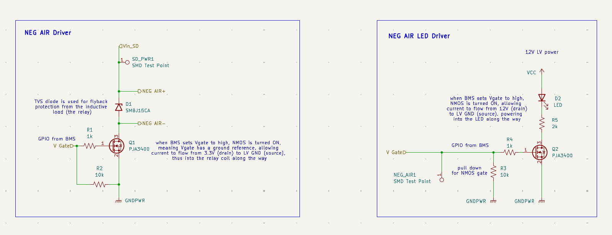
Component sizing
With a 650 µF inverter DC-link capacitance and a maximum pack voltage of 478.8 V, the 2.2 kΩ precharge resistor gives a theoretical 90% charge time of approximately 3.29 s, within the 5 s requirement. Resistor pulse-energy capability and thermal requirements were also evaluated for the 74.5 J precharge event.
Discharge
The active discharge circuit removes energy stored on the vehicle-side DC link after the accumulator is disconnected. A 2.7 kΩ discharge resistor is switched across the HV bus using a pair of back-to-back 1000 V depletion-mode NMOSs.
The MOSFET gates are driven by an FDA217 photovoltaic isolator, providing galvanic isolation between the low-voltage shutdown circuitry and the tractive system. The two MOSFETs are connected back-to-back so their body diodes oppose one another, reducing off-state current through the discharge path.
Because the depletion-mode devices are normally conducting at zero gate-source voltage, the discharge path defaults toward its conducting state without gate bias. During normal vehicle operation, the isolated driver applies negative gate-source voltage to turn the devices off.
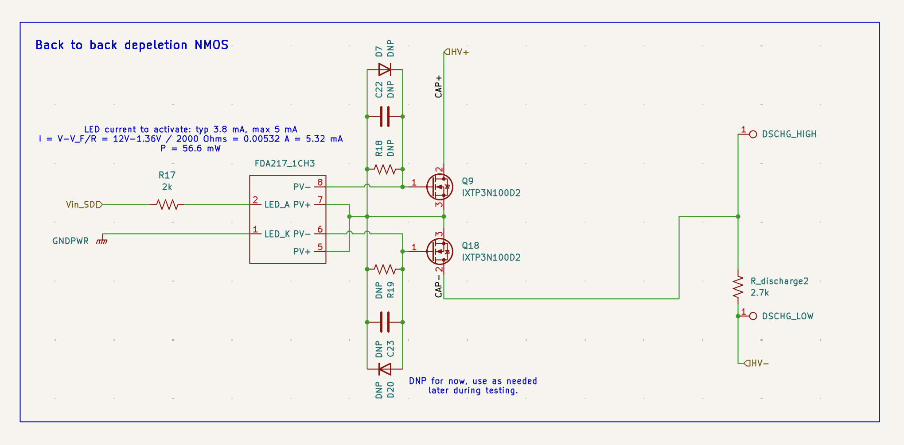
Switching simulation
I used LTspice to verify the switching behavior of the isolated discharge stage at the maximum 478.8 V accumulator voltage. R2 in the simulation is the 2.7 kΩ discharge resistor connected in series with the back-to-back depletion-mode NMOS switch.
With zero gate-source bias, the normally-on depletion-mode MOSFETs conduct and approximately 177 mA flows through the discharge resistor. When the FDA217 photovoltaic isolator applies approximately −12.5 V between each gate and the common source, the devices turn off and the discharge current falls to approximately zero.
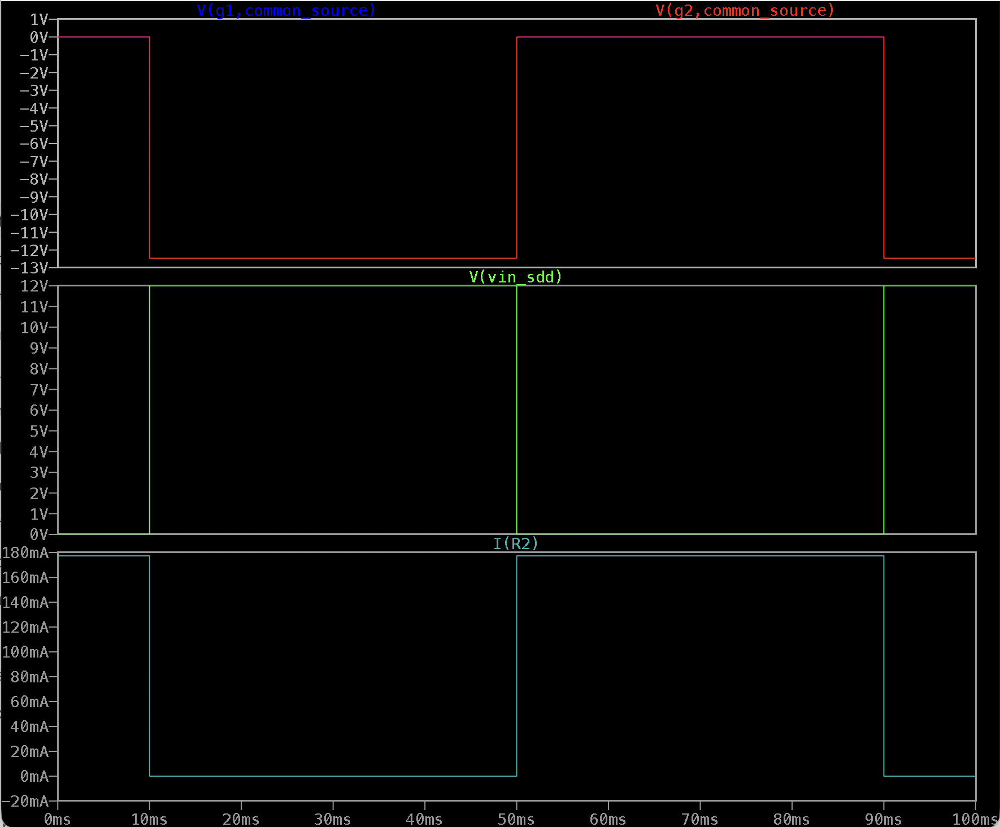
Development and testing
The discharge topology went through several revisions during development. An earlier solid-state implementation switched correctly during low-voltage bench testing, but testing at increasing voltage revealed excessive off-state leakage and heating.
This prompted further investigation into MOSFET off-state behavior and gate biasing rather than relying only on functional switching tests at reduced voltage. The current revision uses back-to-back depletion-mode MOSFETs and includes footprints for additional gate-source resistance, capacitance, and voltage clamping so the switching behavior can be adjusted during validation.
The earlier failure also changed the validation approach for the circuit: correct low-voltage switching alone is not sufficient to characterize a circuit whose leakage and device behavior become increasingly important at several hundred volts.
Power resistor & thermal design
The precharge, discharge, and TSMP circuits each use high-power resistors, but their electrical and thermal requirements are different. Precharge and discharge handle short-duration energy transfer to and from the inverter DC link, while the TSMP resistors must tolerate continuous dissipation at maximum pack voltage. I sized the resistor and heatsink for each operating case.
Precharge
Precharge uses a single 2.2 kΩ, 150 W Vishay LTO150H resistor. With a 478.8 V accumulator and 650 µF DC-link capacitance, the circuit reaches 90% of pack voltage in approximately 3.29 s. The resistor initially dissipates 104.2 W and absorbs approximately 74.5 J during the precharge event.
τ = RC = 1.43 s
t90 = 3.29 s
Ipeak = 0.218 A
Ppeak = 104.2 W
Eresistor = 74.5 J
Pavg = 22.6 W
θSA ≤ 5.26 °C/W
The thermal analysis resulted in a required heatsink thermal resistance of 5.26 °C/W or lower. The resistor is paired with an Ohmite FA-T220-38E heatsink using thermal interface material and clip mounting to provide the required thermal path from the resistor case.
Discharge
Active discharge uses a single 2.7 kΩ, 100 W Riedon PF2472 resistor. Starting from the maximum 478.8 V DC-link voltage, the calculated time to fall below 60 V is approximately 3.65 s, satisfying the 5 s discharge requirement. After 5 s, the predicted DC-link voltage is approximately 27.8 V.
τ = RC = 1.755 s
t60V = 3.65 s
V(5 s) = 27.8 V
Ipeak = 0.177 A
Ppeak = 84.9 W
Eresistor = 74.5 J
Pavg = 20.4 W
θSA ≤ 5.6 °C/W
The calculated heatsink requirement is 5.6 °C/W or lower. The discharge resistor is paired with an Ohmite FA-T220-25E heatsink.
TSMP resistors
Each tractive-system measurement-point line uses a 15 kΩ, 100 W Vishay LTO100 resistor. Unlike precharge and discharge, the TSMP resistors are sized for continuous operation. At maximum pack voltage, a short between the measurement points produces approximately 15.96 mA, with each resistor dissipating approximately 3.82 W.
Ishort = 15.96 mA
Presistor = 3.82 W
Ptotal = 7.64 W
θSA ≤ 13.2 °C/W
This gives a required heatsink thermal resistance of 13.2 °C/W or lower. Each TSMP resistor is mounted to an Ohmite WA-T247-101E heatsink.
HV-present detection
The HV-present circuit provides a hardware indication of whether the tractive system is above the 60 V threshold. A high-impedance resistor divider scales the HV bus voltage to a low-voltage signal, which is compared against a fixed reference using an LM393 comparator.
Five series 1 MΩ resistors are used on the high side of the divider to distribute voltage across multiple components. The comparator changes state at approximately 55.7 V, providing margin around the 60 V threshold. Its output drives a PMOS stage, and the resulting HV-present state is transferred across the HV/LV isolation boundary through an optocoupler.
The resulting hardware signal is used by the vehicle's HV indicator and ready-to-move circuitry. Setting the threshold in hardware keeps the safety indication independent of a software voltage measurement.
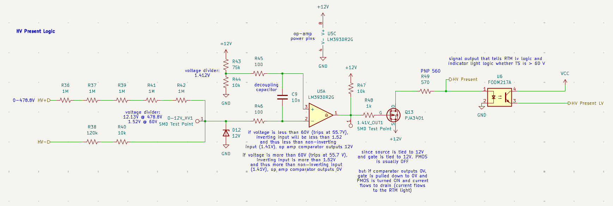
Ready-to-move light
The ready-to-move (RTM) light is driven by a hardware oscillator rather than relying on software to generate the flashing signal. A 555 timer configured as an astable oscillator produces an approximately 2.7 Hz, 50% duty-cycle output when the RTM signal is enabled.
The timer output drives an NMOS/PMOS stage that switches the external 12 V RTM light. Implementing the flashing function in hardware provides predictable light behavior without requiring the BMS to continuously generate the flashing waveform.
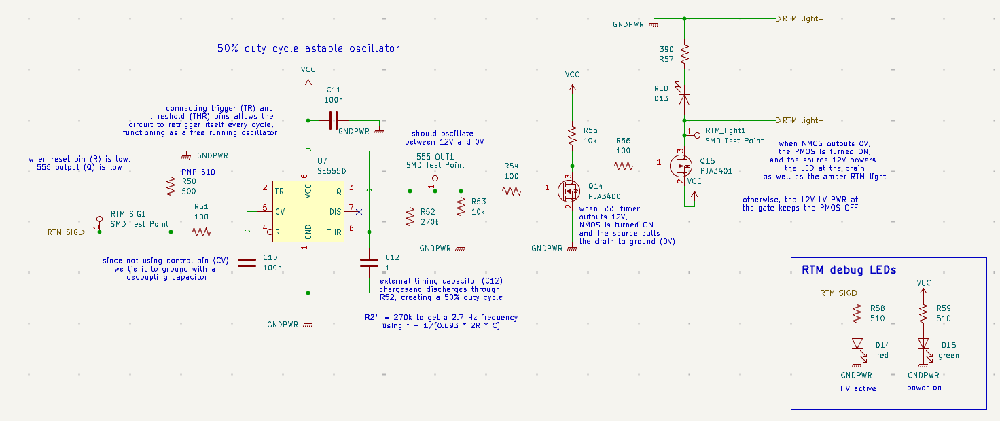
AIR weld detection
The AIR weld-detection circuit determines whether an accumulator isolation relay has remained closed after it has been commanded open. Two isolated solid-state switches configure the measurement path so the voltage associated with the AIR can be checked while maintaining isolation from the low-voltage control system.
When enabled, a high-impedance resistor divider scales the measured voltage for an LM393 comparator referenced to approximately 1.6 V. The comparator output is inverted by a PMOS stage and transferred to the low-voltage system through an optocoupler, providing an isolated digital weld-status signal to the BMS.
The isolated switches also allow the measurement network to be disconnected when it is not required, preventing unwanted voltage across the sensing network in other operating states.
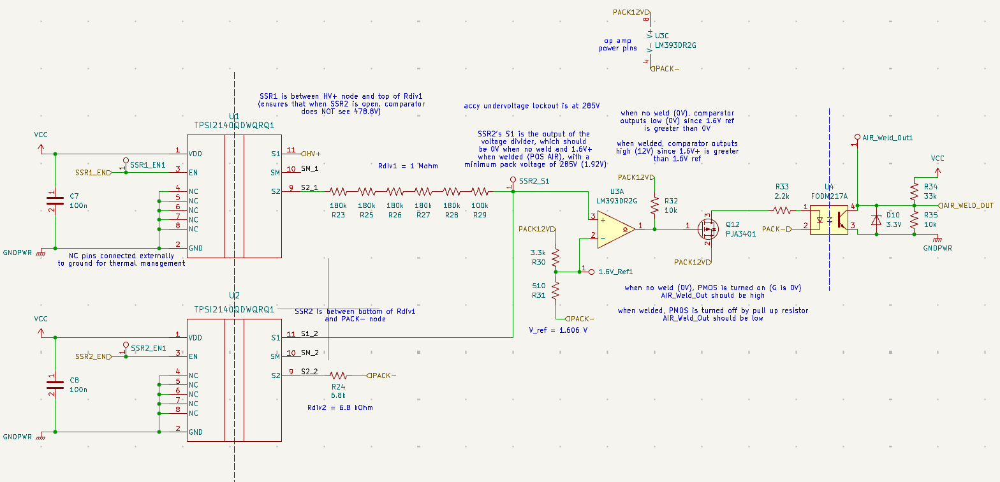
Previous-revision testing
The weld-detection architecture was originally developed as a standalone board during the previous vehicle cycle before being integrated into the current HV Control Board.
During testing of the previous revision, the low-voltage output exhibited a transient that could momentarily exceed the allowable GPIO voltage. A 3.3 V clamp was added at the isolated output to protect the BMS input. The current integrated design retains this protection while consolidating the circuit onto the main board.
Testing the previous standalone board also allowed the divider, comparator threshold, isolation stage, and output logic to be evaluated independently before integrating the function into the larger accumulator electronics system.
PCB layout
The board is a four-layer design containing both low-voltage control electronics and circuitry connected to the 478.8 V tractive system. The layout uses physical separation between the HV and LV regions, with a 5 mm keepout across the isolation boundary and no low-voltage ground plane extending beneath isolated high-voltage circuitry.
Ground pours and via stitching throughout the low-voltage region provide short return paths and tie the ground planes together. High-voltage functions are kept physically separated from these low-voltage ground pours, and circuits that cross the HV/LV boundary do so only through their intended isolation components.
The precharge, discharge, and TSMP power resistors use dedicated heatsink mounting provisions incorporated into the PCB. Connector placement and board dimensions are also constrained by the accumulator enclosure and the three-PCB electronics stack.
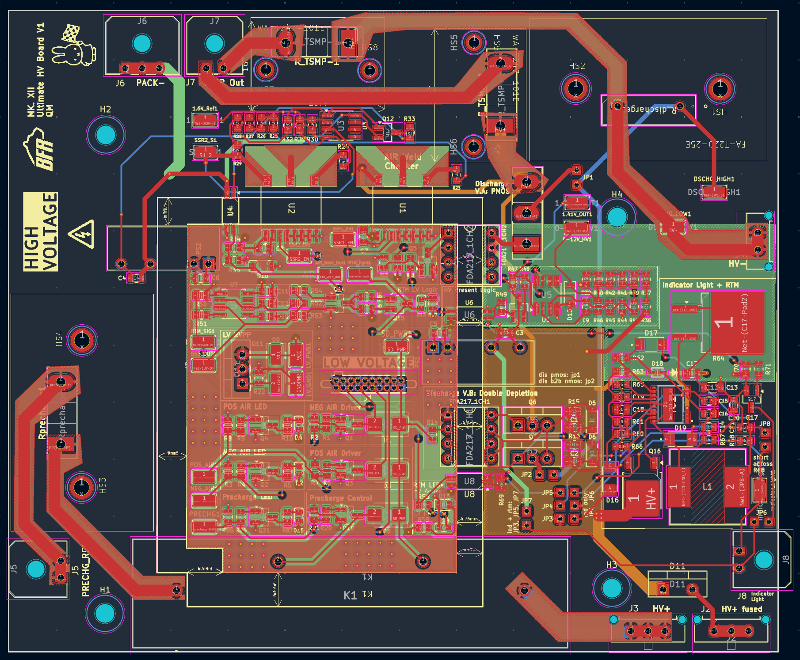
Testing
The current revision is undergoing board bring-up and subsystem validation. Testing is performed at the circuit level before progressing to integrated operation, beginning with low-voltage power and logic checks before applying increasing voltage to circuits connected to the tractive system.
Test points are included throughout the design for relay commands, comparator outputs, sensing nodes, and safety-light logic so intermediate states can be measured during bring-up. Debug LEDs provide additional indication of commanded relay states, HV presence, and RTM operation.
High-voltage circuits are validated incrementally rather than immediately applying full pack voltage. This is particularly important for the discharge and sensing circuits, where leakage, device voltage stress, thermal behavior, and isolation performance may not be apparent during low-voltage functional testing.